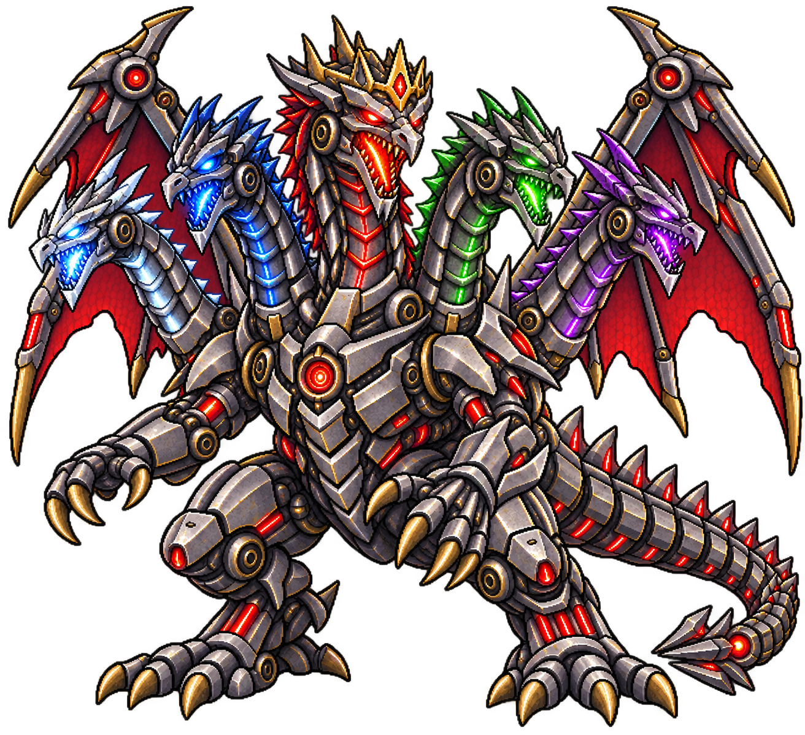
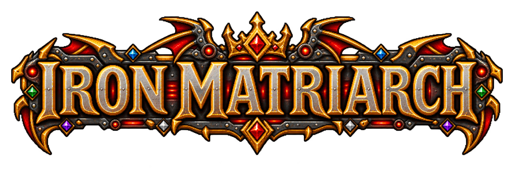

Iron Matriarch · mechanical dragon cinematic


Embers + metal sparks + impact bursts · 6-second concept · placeholder dungeon floor · Dragon: Snarl, Roar + Attack · Breviceps · CC0


Embers + metal sparks + impact bursts · 6-second concept · placeholder dungeon floor · Dragon: Snarl, Roar + Attack · Breviceps · CC0